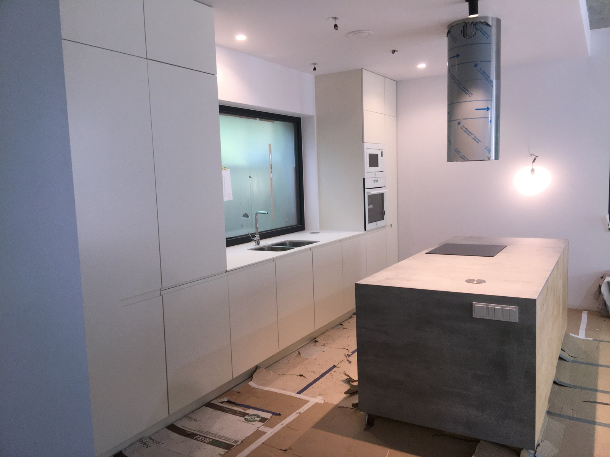
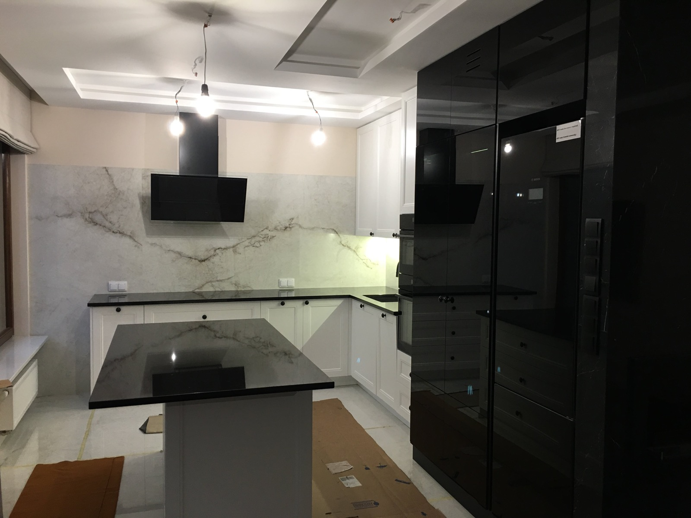
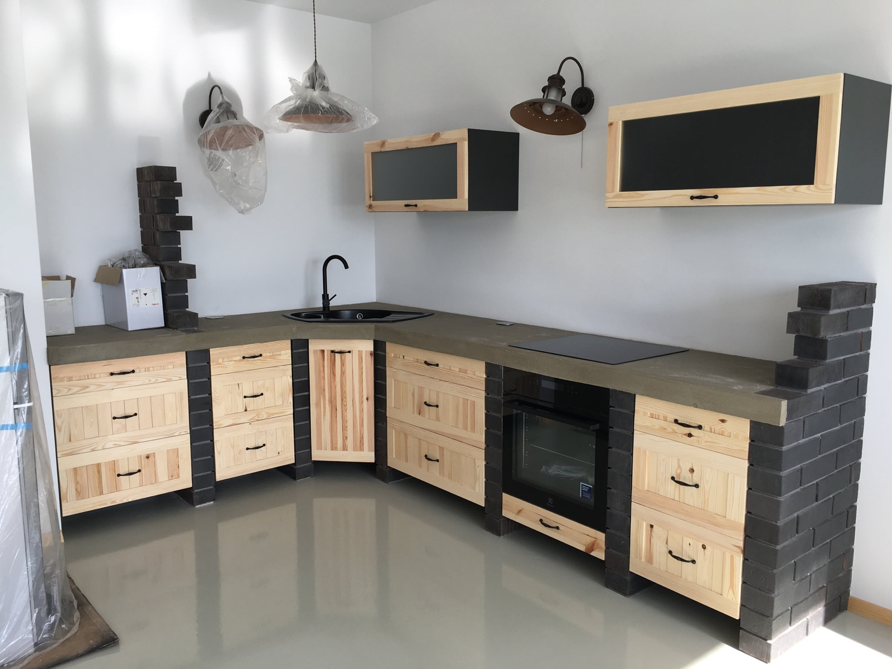
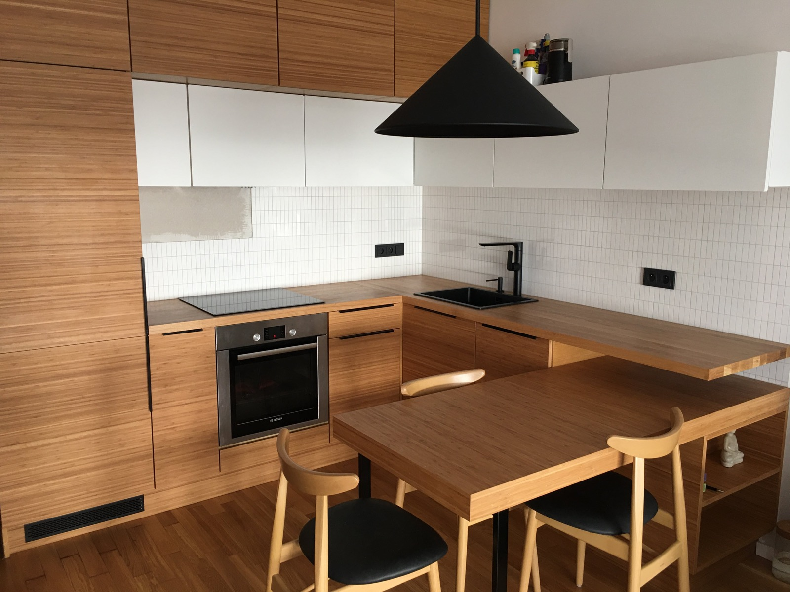
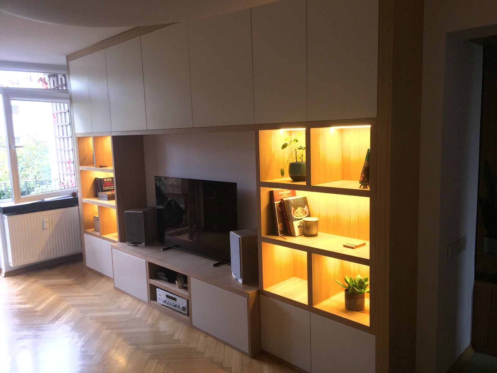
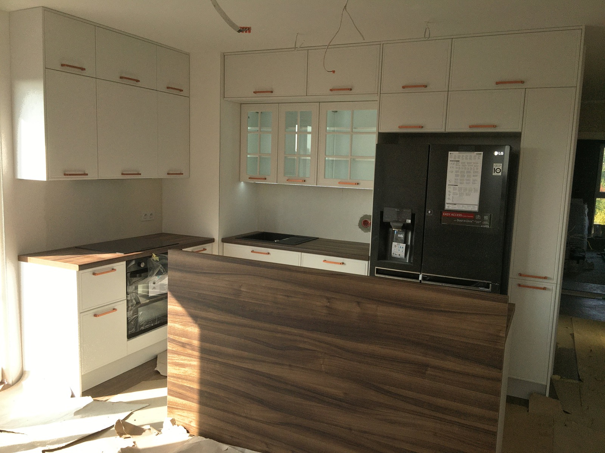

Madrid, Spain · Custom furniture full cycle
Ruslan Lypovskyi
Custom Furniture Maker & Millwork Installer
Detail-driven maker with experience across the full custom furniture cycle: technical design in BLUM E-SERVICES, material preparation, production, assembly, installation, adjustment, and after-service.
Professional profile
Custom furniture work from technical planning to final fit.
I specialize in full-cycle custom furniture work: measuring, technical planning, BLUM E-SERVICES configuration, preparation of components, workshop production, assembly, installation, final adjustment, and after-service.
My background includes family-based craft experience, custom furniture production in Poland, and high-end millwork installation in Canada. I work best on projects where accurate planning, functional hardware, clean details, and practical execution matter equally.
Experience
Recent professional work
May 2023 - Apr 2025
Carpenter · EBENTECH
Montreal, Canada
- Assembled and installed high-end wooden fixtures, fittings, and custom millwork elements.
- Measured, cut, shaped, joined, and finished wood materials according to project specifications.
- Operated saws, planers, routers, sanders, and hand tools for precise woodworking and detailing.
- Coordinated with team members to keep installations clean, safe, and aligned with project timelines.
Sep 2018 - Mar 2023
Carpenter · Specuslugeksport
Poland
- Designed, produced, assembled, repaired, and serviced custom furniture for residential, kitchen, and office spaces.
- Prepared technical solutions, hardware layouts, and furniture configurations before production and installation.
- Installed kitchen, room, and office furniture, including modular systems, BLUM fittings, and customized site adjustments.
- Completed floor laying, minor renovation work, and warranty service for furniture and fittings.
Skills
Full-cycle capabilities for furniture projects
Custom Furniture
- Furniture made to measure
- Kitchen, room, and office furniture
- Furniture assembly and site customization
- Hardware selection and fitting
- Furniture repair and service
Technical Planning
- BLUM E-SERVICES planning
- Technical drawing reading and interpretation
- Furniture configuration before production
- Precision measuring and cutting
- Production-ready component preparation
Workshop & Installation
- Cutting, grinding, planing, and milling
- Machinery operation and maintenance
- Installation, leveling, and final adjustment
- Wooden fixtures and fittings
- Home appliance assembly and connection
Professional Strengths
- Accuracy and attention to detail
- Teamwork and coordination
- Organization and punctuality
- Resourcefulness on site
- Aesthetic sense and patience
Languages
- Ukrainian · Advanced
- Russian · Advanced
- Polish · Conversational
- English · Elementary
Selected work
Visual proof of craft quality





Education
Technical foundation
Technical Secondary School
Technician-mechanic of machines and mechanisms
KNUIAU
Jurisprudence
Contact